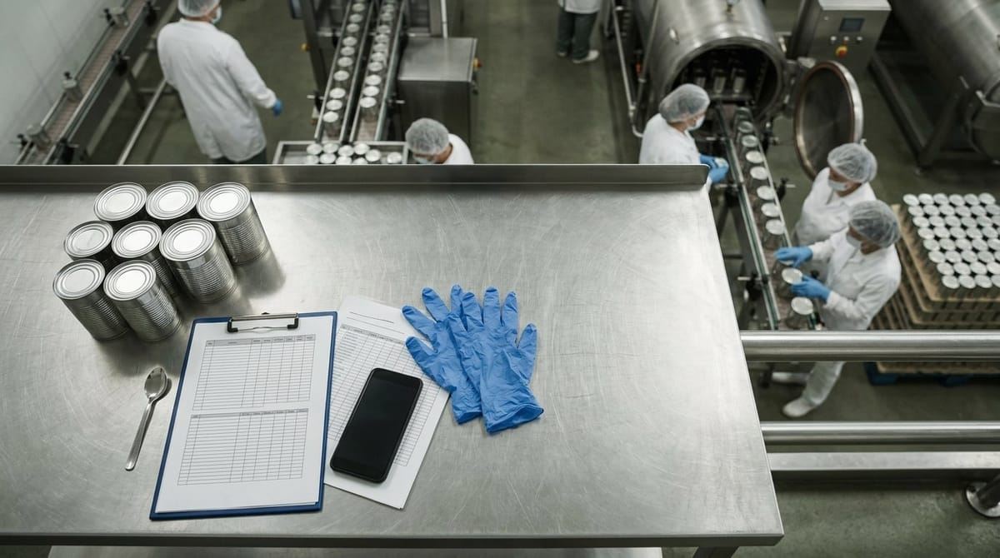

Software de calidad para la industria conservera

Software de calidad para la industria conservera
La industria conservera trabaja bajo una presión constante: campañas cortas, volúmenes altísimos y productos cuya seguridad depende de procesos críticos que no admiten errores. Contar con un software de calidad para industria conservera no es ya una ventaja competitiva, sino una necesidad operativa para cualquier empresa que quiera garantizar la inocuidad de sus productos, cumplir la normativa vigente y mantener la eficiencia en línea. En este artículo te contamos por qué el papel se queda corto y qué debe ofrecerte una solución digital pensada de verdad para el sector.
Los puntos críticos de calidad propios de una conservera: esterilización, cierre hermético y vida útil
Una conservera no es una fábrica de alimentación genérica. Sus procesos tienen características que la distinguen y que elevan enormemente el riesgo microbiológico si el control falla. Los tres pilares críticos son la esterilización, el cierre hermético y la vida útil.
El proceso de esterilización —ya sea por autoclave, pasteurización o tratamiento UHT— determina si el producto será seguro durante toda su vida comercial. Un F₀ insuficiente puede dejar esporas de Clostridium botulinum viables, con consecuencias gravísimas para el consumidor. El Reglamento (CE) n.º 2073/2005 relativo a los criterios microbiológicos aplicables a los productos alimenticios (Reglamento [CE] 2073/2005, 2005) establece los límites que deben cumplirse y que obligan a registrar y verificar cada ciclo de tratamiento térmico de forma sistemática.
El cierre hermético es el segundo gran punto de control. Una costura defectuosa en una lata o un sellado incorrecto en un envase flexible anulan todo el trabajo previo de esterilización: el producto recontamina y la vida útil se colapsa. Por eso los controles de doble costura, de presión y de estanqueidad deben realizarse con una frecuencia altísima durante la campaña.
Por último, la validación de la vida útil cierra el círculo. Las conservas se definen precisamente por su durabilidad, y cualquier desviación en la cadena de proceso puede acortarla de forma imprevisible. La correcta gestión de estos tres vectores exige trazabilidad total de lote y registros fiables desde la recepción de la materia prima hasta la expedición del producto terminado.
Por qué el control en papel no aguanta los lotes de campaña de una conservera
Durante la campaña del tomate, del espárrago, del pimiento o del atún, una conservera puede envasar decenas de miles de unidades en pocas horas. En ese contexto, el papel tiene tres problemas estructurales que ponen en riesgo la operación.
El primero es la velocidad: cuando el operario tiene que rellenar un formulario en papel mientras gestiona la línea, los registros se acumulan, se retrasan o —en el peor de los casos— se rellenan de memoria al final del turno. Esto convierte el registro en una ficción que no refleja lo que realmente ha ocurrido en el proceso.
El segundo problema es la dispersión. Los datos de temperatura de autoclave, los controles de costura, los análisis de pH y los registros de incidencias acaban en carpetas distintas, en diferentes departamentos, gestionados por personas distintas. Cruzar esa información para tomar una decisión rápida —bloquear un lote, ampliar el muestreo, liberar expedición— se convierte en un trabajo de horas que la campaña no puede esperar.
El tercero es la trazabilidad reactiva. Con papel, la trazabilidad solo existe en retrospectiva: si aparece un problema en el mercado, tienes que rastrear manualmente cientos de folios para delimitar el lote afectado. Con un software de calidad, ese mismo ejercicio se hace en segundos.
Software de calidad para conservas: APPCC, control de esterilización, trazabilidad de lote e incidencias en línea
Un software calidad conservas eficaz debe cubrir de forma integrada los cuatro pilares sobre los que se sostiene el sistema de gestión de calidad del sector.
APPCC digital y adaptado al sector. El sistema APPCC —Análisis de Peligros y Puntos de Control Crítico— es la columna vertebral de la gestión de inocuidad alimentaria, tal y como exige el Reglamento (CE) n.º 852/2004 relativo a la higiene de los productos alimenticios (Reglamento [CE] 852/2004, 2004). En una conservera, los PCCs incluyen el tratamiento térmico, el cierre del envase y, según el producto, el control del pH o la actividad de agua. El software debe permitir configurar estos puntos, definir límites críticos, registrar las mediciones en tiempo real y generar alertas automáticas cuando se supera un límite, sin depender de que el operario recuerde avisar.
Control de esterilización integrado. La solución debe poder recoger los datos de los autoclaves —ya sea por integración directa con el sensor o por introducción del operario desde un dispositivo móvil o tablet en línea— y asociarlos automáticamente al lote en curso. Cualquier desviación del perfil de temperatura-tiempo debe quedar registrada como incidencia, vincular automáticamente el lote afectado y lanzar el protocolo de gestión correspondiente.
Trazabilidad de lote completa. Desde la materia prima —variedad, proveedor, fecha de entrada— hasta el producto terminado y su destino de expedición, pasando por los lotes de envases, tapas y aditivos utilizados. Esta trazabilidad bidireccional es imprescindible para responder en minutos ante una alerta de seguridad alimentaria o una inspección.
Gestión de incidencias en línea. Cuando en la línea de producción se detecta un defecto —una costura fuera de especificación, un pH anómalo, un envase dañado— el sistema debe permitir abrir la incidencia desde el puesto de trabajo, bloquear el lote afectado si procede, asignar responsables y hacer seguimiento hasta el cierre. Sin papel, sin llamadas, sin pérdida de información.
Cómo se adapta Solved al ritmo de campaña de una conservera sin frenar el envasado
Solved es un software de calidad diseñado para la industria agroalimentaria, y su implantación en conserveras responde a los retos reales que acabamos de describir. La filosofía de Solved parte de una premisa clara: la herramienta debe adaptarse al proceso, no al revés.
Durante la campaña, el tiempo es el recurso más escaso. Por eso Solved permite que los operarios de línea registren los controles desde dispositivos móviles o tablets robustas directamente en el punto de trabajo, con formularios optimizados para ser completados en segundos. No hay que ir a la oficina, no hay que esperar al fin de turno: el dato entra en el sistema en el momento en que se genera.
El control de calidad esterilización conservas se gestiona desde un panel centralizado donde el responsable de calidad ve en tiempo real el estado de todos los autoclaves y lotes activos. Si una curva de esterilización presenta una anomalía, la alerta llega de inmediato al responsable, que puede tomar la decisión de retener el lote antes de que llegue al almacén de expedición. Esto evita el coste —económico y reputacional— de una retirada de mercado.
La trazabilidad de lote en Solved es bidireccional y cubre toda la cadena: desde el campo o el proveedor hasta el cliente final. En una conservera con múltiples líneas operando en paralelo y referencias distintas, esto significa que puedes delimitar en segundos qué lotes se vieron afectados por una desviación concreta, sin depender de búsquedas manuales en carpetas de archivo.
Además, Solved se integra con la documentación del APPCC y permite mantener actualizados los registros exigidos por la normativa sin duplicar trabajo. Los informes de auditoría se generan automáticamente a partir de los datos introducidos durante la producción, lo que reduce drásticamente el tiempo de preparación de inspecciones y certificaciones.
Si quieres profundizar en los retos específicos del sector, te recomendamos nuestro artículo sobre control de calidad en conservas: retos y soluciones digitales. Y si tu empresa también trabaja con productos cárnicos, descubre cómo abordamos ese sector en nuestro artículo sobre software de calidad para la industria cárnica.
En definitiva, digitalizar la calidad en una conservera no es un proyecto de futuro: es la única forma de mantener el control cuando la campaña aprieta, los lotes se suceden sin pausa y el margen de error es cero. Solved está diseñado para acompañarte en ese reto.
Referencias
- Reglamento (CE) n.o 852/2004 del Parlamento Europeo y del Consejo, de 29 de abril de 2004, relativo a la higiene de los productos alimenticios. (2004). https://eur-lex.europa.eu/eli/reg/2004/852/oj?locale=es
- Reglamento (CE) n.o 2073/2005 de la Comision, de 15 de noviembre de 2005, relativo a los criterios microbiologicos aplicables a los productos alimenticios. (2005). https://eur-lex.europa.eu/eli/reg/2005/2073/oj?locale=es